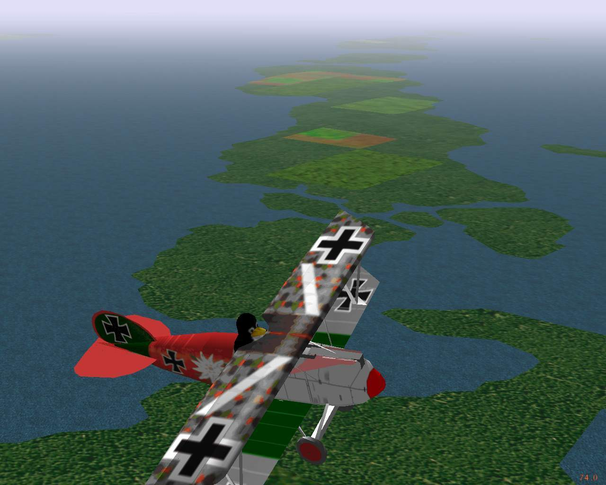

Presenter and Developer
Presented at
UKUUG's Linux2001
- C. Olson

- Project Leader
GPL Open Source licensed
Linux, Win32, Mac, Irix platforms
(page 1)
About the presenter
- Alexander Perry, a FlightGear developer:
- Single engine pilot (commercial and instrument rated)
- Advanced and instrument ground instructor
- Aviation safety counselor (San Diego/Imperial counties, California)
(page 2)
The FlightGear project
- Project goals:
- Do things `right'
- Minimize short cuts
- Learn and advance knowledge
- Build better toys to play with on ordinary computers
- Inspired by David Murr, April 1996
- Open source GPL - Free as in speech and as in beer
- Curt Olson made a multiplatform, OpenGL based release in July 1997
- Now more than just flight aerodynamics
- Improving graphics, clouds, and fog, time of day
- Shaded sky with sun, moon, stars, and planets correctly drawn
- Automated world scenery generation tools based on real world data
- Electronic navigation systems
- Airports and runways
- Head up display and instrument panel
- Photo-realistic scenery
- Open, flexible, extensible architecture
(page 3)
Many simulation applications
- FlightGear is used in many different ways
- Building a realistic home simulator from old airplane parts
- Replacing the PC of an agricultural single engine simulator
- Retrofitting older sim hardware with FGFS based software
- A viable, modifiable alternative to commercial sims
- A basis for icing research at the Smart Icing Systems Project
- Training pilots to taxi safely at large airports
- Demonstrating the dangers of mountain wave and turbulence
- Remote user interface for an unmanned aerial vehicle
- Generating visuals for aircraft carrier launch/recovery
- Scenery and head up display for a Matlab-based flight model
(page 4)
This talk is only about visual scenery
- Among the dozens of simulator uses
- Each has a different emphasis and technical needs
- Unneeded features may be omitted to save resources
- Compromises are usually made in the implementation
- We prefer to offer run- and compile-time choices
- One of the benefits of being an open source project
- Visual scenery is a huge resource hog
- Application-specific optimization is critical
- This talk reviews why scenery is necessary
- Summarizes the standard FlightGear scenery
- Discusses some of the easy customizations
- What is the simplest visual display we need ?
(page 5)
Cessna 172 in the clouds
(no visuals!)
(page 6)
Scenery is often unnecessary
- For instrument flight rules (IFR)
- The pilots act the same inside as outside the clouds
- They operate the aircraft by reference to the instruments
- They navigate using electronic aids and radio instructions
- For dead reckoning trips
- The pilots use time/heading/distance to navigate
- The view outside is mostly optional during cruise
- Only a few specific landmarks are needed to check progress
- For night flight
- The world is black (except for towns and airports)
- Need to only show a blob of light for each town
- For these cases, should we bother ?
- Would it really just be eye candy ?
(page 7)
Visuals can be a distraction
- Popping in and out of sunny clouds
- Dim grey featureless background when inside a cloud
- Blinding white glare when emerging into sunlight
- Makes the instruments very hard to read
- Occasional small patches of ground
- Not big enough to identify any specific landmarks
- Not long enough to match patterns to the charts
- Distracts pilot from flying the plane
- Encourages erroneous changes in route
- Mountains in the distance
- A pretty background, static and easy to draw
- Too far away to estimate the aircraft's position
- Appears to confirm the pilot's opinions
- So, yes, even IFR benefits from scenery
- It all makes flying harder and more realistic
(page 8)
On short final to land

(page 9)
Basic scenery is also necessary
- To provide an airport area for takeoff and landing
- For IFR flights that disappear into a cloud
- When it isn't a conventional runway
- To show the specific landmarks and town outlines
- For dead reckoning, pilotage, and similar
- Doesn't take much; the occasional tower, lake, etc.
- To decide what should be seen between the clouds
- Where the mountains are in the distance
- And whether the plane will shortly hit one
- FlightGear has supported all that for years ...
(page 10)
Cessna 172 on landing approach
(page 11)
Software implementation
- Graphics are drawn using the OpenGL API
- Using accelerated renderer such as Utah or XF4
- Through GLX calls on Linux; Mesa/X11 is too slow
- The scene graph is managed by the PLIB library
- FlightGear's loader passes file names to SimGear
- Visibility and clouds are specified by weather model
- Separate XML-derived objects are also used
- The Head Up Display is drawn in front of scenery
- The Instrument Panel is drawn beneath the scenery
- A big improvement over the C++ method a year ago
- What creates the many files that SimGear can load ?
- All those gigabytes of synthetic scenery ...
(page 12)
Montgomery field, San Diego California
(page 13)
Simulating the World - TerraGear
- Open-source tools and rendering libraries
- We collect free data for building 3D representations
- The whole earth is usable in real time rendering
- Much freely available GIS data on the internet
- Core data for FlightGear has to be unrestricted
- Many sources of raw data cannot be incorporated
- Four categories of data are in use
- Digital Elevation Model (DEM), 1 km grid worldwide
- Polygon outlines for coasts, lakes, islands, and towns
- Land use / land cover `raster' data
- Landmarks such as lighthouses, radio and water towers
- Individual users and groups can rebuild it
- Generate larger, slower files for faster computers
- Use locally available, restricted, data sources
- Optimize scenery quality for a specific application
(page 14)
TerraGear - Screen dump

(page 15)
TerraGear - Storage size
- It's clearly a synthetic image
- But sufficient to understand and interpret
- Allows cross-country navigation by pilotage
- Where the pilot is comparing the view to a chart
- It's compact, about one kilobyte per square kilometer
- Necessary, since about 10000 sq km may be in view
- A four level hierarchy with 10-100 ratios ...
- One planet, currently only the Earth, then
- 10 deg x 10 deg rectangle, then
- 1 deg x 1 deg, approx 100 km x 60 km, then
- A rectangular tile of 100 sq km approximately
- These tiles are demand loaded and unloaded
- So it runs slower when the visibility is higher
- Needs more memory to store the additional tiles too
(page 16)
National data limitations
- Poor worldwide elevation data is already being used
- Good data is often country specific
- Need special code to read and process file format
- A lot of effort to do this for every country
- Rapidly reaches the point of diminishing returns
- Many organizations collect and transform the data
- Creating a standardized format, for their customers
- There is a huge amount of effort involved
- So their prices are extremely high to fund it
- They cannot give the data away for us to use
- Maybe those organization will sell scenery
- Run their data through TerraGear and burn some CDs
- You can expect a high price tag for such reliable data
(page 17)
Mismatch of scenery and charts
- Public domain data is generally of reduced quality
- Or out of date, or selective, or local coverage, etc.
- The scenery generated from that data may be incorrect
- Compared to the real world out there
- But generally only in visually unobtrusive ways
- These errors are more visible in electronic navigation
- Such as needed for instrument flight (IFR)
- Since the route tolerances are extremely tight
- Navigating the simulated aircraft around
- With current Jeppesen (or NOS, etc) charts
- Can be extremely frustrating, or impossible
- When a piece of scenery is incorrectly in the way
(page 18)
Synthetic chart - example
(page 19)
Synthetic charts - Atlas project
- Automatic translation of TerraGear files
- Generates usable aviation style charts
- These charts are inaccurate to the real world
- Therefore useless for flight in an aircraft
- Extremely accurate for the simulated world
- When operating the FlightGear aircraft
- Often easier to make and use printouts
- The Atlas application is for browsing
- Can connect directly to FlightGear
- Displays aircraft current location on moving map
- Best used selectively by the simulator pilot
- Most small aircraft do not contain such GPS units
- ... with integrated moving map displays ... yet
- Invaluable to the flight instructor
(page 20)
Colorized satellite overlay for Ramona

(page 21)
Context cues around airport
- That insert was a quick few hours work
- It shows the taxiway and buildings around the runway
- The runway is no different, does it really help ?
- The default textures are intentionally fairly featureless
- Pilots tend to fly low, similar to black hole effect
- The other stuff helps to provide a sense of scale
- The simulator was located at the red blob
- This helps users to interpret the landscape
- Are these additional cues sufficient ?
(page 22)
Short final at San Jose

(page 23)
Do we want photorealism ?
- Is the TerraGear scenery sufficient ?
- Eye candy has no functional benefit
- Looks nice, for spectacular screen dumps and demos
- Helps sell the package to potential users
- Doesn't help with usual usage of the simulator
- Can only be done for specific small areas
- Storage need is many thousands of times larger
- Unrealistically distinctive from a distance
- Sometimes, the aircraft stays in a small area
- Balloons, acrobatics, model aircraft, hang gliders, etc
- Landing practice, traversing mountain canyons, etc
- So, is photorealism just eye candy ?
- Well, some applications rely on it ...
(page 24)
Joining downwind at San Jose
(page 25)
Practicing visual decisions
- Making an incorrect choice of a runway
- Dragstrips can look like runways
- Airports can appear to be another parking lot
- Parking lot lights look like an approach
- A large airport can hide a smaller one
- A large taxiway might look like a small runway
- Operating in poor visual conditions
- Trying to distinguish things in fog
- Lightning flashes, heavy rain showers
- Navigating below a low cloud layer
- It's easy to make a wrong decision at 150 mph
- And worth practicing to avoid it
(page 26)
How many runways at San Jose ?
(page 27)
Design of airports
- Can airport design influence the amount of pilot mistakes?
- Arrangment and size of parallel runways
- Runway 29 to the far left can easily be overlooked
- Starts later
- Lighter coloured surface
- Color and contrast of runways/taxiways
- Taxiway `Y' has same color as runway 30L
- Pilot knows there are two active runways
- 30L is clearly a runway
- At a glance, taxiway `Y' looks like the other runway
- Can simulators be used to study and evaluate airport design problems?
- What can be done if a problem is discovered?
- Simulator training a prerequisite for airport use?
(page 28)
Airport navigation training
- Steering a taxiing aircraft is easy, but
- The vehicle is ungainly, 40 ft wide
- You cannot back up, or usually turn around
- Small signs are mounted low to the ground
- One junction may have six exits to choose
- The paved surface may be 100 ft wide
- Nothing indicates corners in the distance
- A Cessna 172 has a much lower vantage point that a 747
- A lot of practice is needed to deal with this
- A map doesn't always help enough
- Turn a wrong corner, you might end up on a runway
- Can be bad if someone is trying to use it ...
- Airport service vehicles could also benefit
(page 29)
The runway incursion problem
- Any occurrence at an airport that
- Results in loss of separation with an aircraft
- Taking off, landing, or intending to do so
- Runway incursions are made up of
- Pilot deviations (eg pilot took a wrong turn),
- Operational errors (eg controller made a mistake),
- Vehicle or pedestrian deviations (went the wrong way), and
- Operational deviations (facility coordination error).
- Average rate is 230 per year in the 1990's
- Rising 72% from 1993 to 1997, and to 547 in 1999
- Accidents in Atlanta, Detroit, Los Angeles, St. Louis, etc
- The FAA strategic goal: reduce accidents
- Eliminate 80% of the 1996 fatal rate by 2007
- Curt is extending FlightGear to support them
(page 30)
Photo scenery, buildings, signage
- Replace the airport surroundings with photos
- A directory with megabytes of photo texture data
- Renders to be a bit fuzzy, but usable for taxiing
- But rapidly overloads video capability in flight
- Add buildings and obstructions to vision
- Drawn manually using the open source Pretty Poly Editor
- Created by proprietary 3d image processing techniques and imported
- Dropped into place using a file of airport objects
- These mostly serve as navigation landmarks and distractions
- The pilot can misidentify them from controller clearance
- Place the little signs in appropriate places
- Their textures are computer generated on the fly
- Locations are measured from airport engineering maps
(page 31)
San Jose California
(page 32)
Immersion and field of view
- Humans can see 90 degrees on each side
- And a large angle of up and down too
- Without moving your head, even
- Light aircraft have wrap-around windows
- The brain processes that whole field of view
- If view is partly missing, system is not immersive
- Unrealistic, especially for visual navigation tasks
- A single monitor display is a poor substitute
- FlightGear permits unlimited number of display channels
- Each channel is a separate process on a network socket
- Permits efficient SMP and clustering implementations
- Limited by your number of video cards, monitors, etc
(page 33)
Testing triple display hardware

(page 34)
What's in the future?
- There's a lot out there ... some examples:
- FDMs are not (yet) accurate enough
- Only suitable for conservative flights
- Don't reflect the challenges of acrobatic maneuvering
- New consumer technologies for immersion
- Surround projectors, head mounted displays
- Directional sound and cockpit motion effects
- Users will fly safe, forgetting they're not in danger
- Recent radar and visual satellite surveys
- Enough detail to be used as photorealistic scenery
- First, we must manipulate terabytes in real time
- Data volume is about a million times larger than now
(page 35)
Conclusions
- FlightGear is a simple Open Source project
- Builds on many other projects
- Due to the subject it addresses
- It has many issues and unusual concerns
- Most rarely inconvenience other projects
- These elements are providing the exciting challenges
- And variety of associated activities enjoyed by the developers
- Thank you for your interest
www.flightgear.org
(page 36)